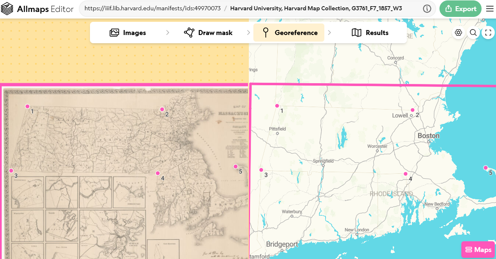
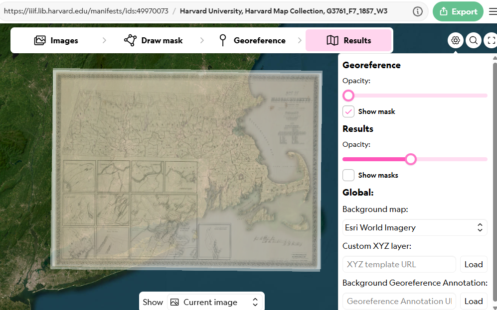
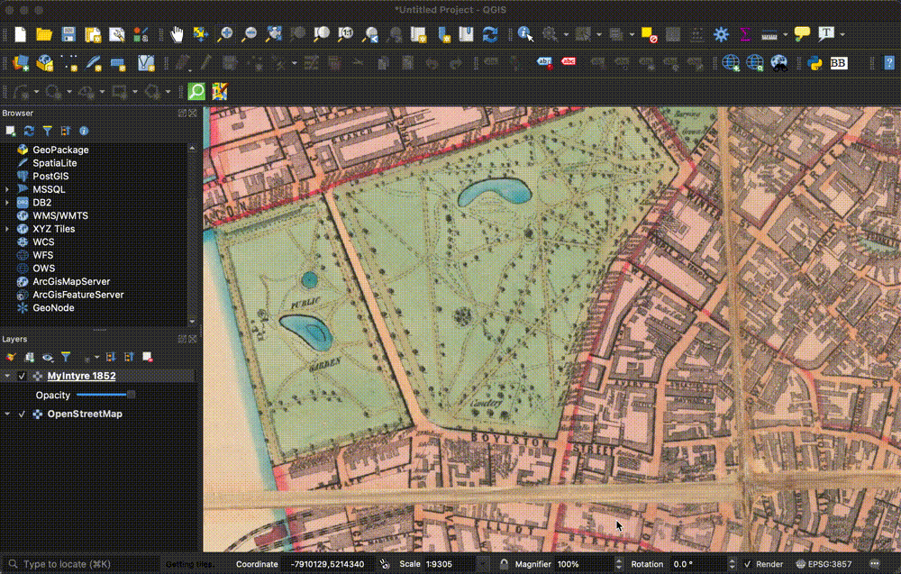

Georeference scanned library maps in a web browser
Learn how to use AllMaps to georeference Harvard Library Digital Collections items in the browser, to use in GIS and map making projects.
Topics covered by this guide
- Select a map to georeference from the Harvard Libraries’ digital collections
- Georeference with free browser tool, AllMaps
- Add the georeferenced map to a GIS project in QGIS or ArcGIS Pro
Select a map to georeference from the Harvard Libraries’ digital collections
- Visit the Harvard Library catalog, HOLLIS.
- Change the initial search drop-down from
Catalog & ArticlestoLibrary Catalog. - Scroll down to the Location filter on the right and filter by Harvard Map Collection.
- Change the initial search drop-down from
- Select ONLINE ACCESS on a scanned map record.
- In the top-right corner of the image viewer, select the metadata Tooltip by clicking the “i” icon.
- Scroll to the bottom of the popup and under Links → Manifest, copy the manifest URL.
Example IIIF Manifest: https://iiif.lib.harvard.edu/manifests/ids:12216977
If you need help finding a manifest for a specific item, contact the Harvard Map Collection.
- Navigate to the AllMaps.org Editor.
- Paste the manifest URL into the input box and select Load.
Learn how to georeference with AllMaps
Use the Georeference tab to assign control points between the map (left) and the baselayer (right).
- Start with at least three control points, evenly distributed.
- Click the results tab to check the accuracy of your placement.

View the results
- Select the Results tab.

- Click the gear icon to adjust view settings, such as background baselayer and map opacity/transparency.
Get a link for GIS software
- On the Results tab, click the
Exportbutton. - Scroll down to
XYZ map tiles. - Copy the URL to your computer’s clipboard.
Add the layer to a Felt map
- In a Felt map, select the Upload anything button.
- Choose From URL.
- Paste the XYZ tile URL from AllMaps.
- Select Add to map.
- To adjust settings, click the layer name in the Legend. You can edit the title and use the slider to adjust Opacity.
Add the layer to a QGIS project
- Open QGIS and start a new project.
- In the Browser window, under XYZ Tiles, drag OpenStreetMap into the canvas.
- Right-click XYZ Tiles and select New Connection.
- Name your map and paste the XYZ tile URL from AllMaps. Select OK.
- Double-click your new connection in the Browser window to add it to the map.
Adjusting Opacity in QGIS
- Right-click the map layer in the Layer list and select Properties.
- Under the Legend tab, highlight Opacity Slider in “Available widgets.”
- Click the right-pointing arrow to move it to “Used Widgets.”
- Select OK. You can now control opacity directly from the Layer list.

Add the layer to an ArcGIS Pro project
- Click the
Maptab. - In the banner in the
Layersection, selectAdd Layer from Path.